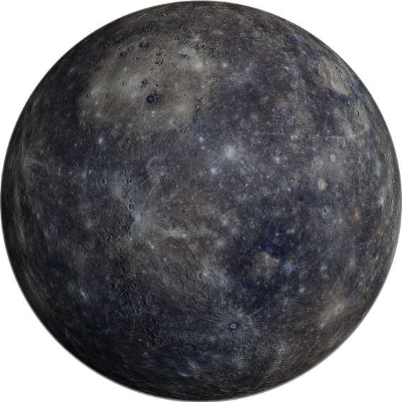

меркурий
Наименьшая планета Солнечной системы и самая близкая к Солнцу. Названа в честь древнеримского бога торговли — быстрого Меркурия.
радиус
2439,7 ± 1,0 км
спутники
Отсутствуют
тип планеты
планета земной группы
кольца
Отсутствуют
01
обзор
Из-за близости к Солнцу Меркурий можно наблюдать только на закате или на восходе, когда он отстоит максимально далеко от Солнца – в наибольших элонгацияхПоложение планеты, при котором её угловое расстояние от Солнца максимально (для земного наблюдателя) . Но даже тогда это не очень удобный объект для наблюдений, так как низкое расположение над горизонтом сопряжено с сильными атмосферными помехами. Максимальное удаление от Солнца может достигать 28 градусов.
Первым навел свой телескоп на Меркурий любопытный Галилео ГалилейИтальянский ученый, внесший вклад в развитие физики, математики, философии, начавший революцию в астрономии, и было это еще в начале XVII века. Но телескоп его был слишком слабым, чтобы что-то увидеть.
7 ноября 1631 года Пьер ГассендиФранцузский католический священник, философ, математик, астроном и исследователь древних текстоввоспользовался вычислениями КеплераИоганн Кеплер - немецкий астроном, первооткрыватель законов движения планет и пронаблюдал прохождение Меркурия по диску Солнца. Вскоре наблюдались фазы планеты и было доказано, что Меркурий вращается вокруг Солнца.
В 1737 году английский астроном Джон БевисАнглийский врач и астроном. Стал известным после открытия Крабовидной туманности в 1731 годунаблюдал редчайшее явление – покрытие Меркурия Венерой. Такое случается раз в несколько столетий, и в следующий раз будет 3 декабря 2133 года.
02
Особенности
Меркурий – ближайшая планета к Солнцу. Он считается плотной планетой. По этому показателю уступает Земле только в 2 раза. Меркурий отличается необычной орбитой. Максимально к Солнцу он приближается на расстояние в 46 млн км и удаляется на 70 млн. Из-за такой особенности Меркурий оказывает влияние на расположенные поблизости планеты, в частности, на Венеру.
солнечные сутки
176 земных дней
орбитальная скорость
47,36 км/с
температура поверхности
от -173°C до 427°C
03
Строение
Оно предположено на основе его плотности. В центре меркурия есть металлическое ядро, которое занимает 42% объема, в то время как у Земли его объем составляет только 17%. Но почему-то, металлическое ядро не создает такое же магнитное поле как у Земли. Магнитосфера планеты составляет всего 1% от Земной.
Вокруг ядра находится слой мантииЭто слой планеты, расположенный между ее металлическим ядром и тонкой корой. Мантия Меркурия относительно состоит из силикатных (кремниевых) пород. Она играет важную роль в теплопередаче между ядром и поверхностью планеты.. Это примерно 500-700 километровый слой породы, состоящий из силикатовЭто вещества, содержащие в своем составе кремний. Помимо кремния в мантии высока концентрация железа, магния, марганца, кальция и кислорода..
Мантию окружает кора. Основываясь на наблюдениях, сделанных космическими аппаратами Mariner 10, MESSENGER и наземными телескопами, астрономы считают, что кора Меркурия имеет толщину 100 — 300 км. Есть множество больших повреждений в ней, и ученые считают, что он сформировался медленно охлаждаясь.
04
атмосфера
Большую часть Меркурия занимает плотное ядро, состоящее преимущественно из железа. Сверху присутствует сравнительно тонкий слой твердых пород, которые составляют поверхность. Атмосфера у этой планеты практически отсутствует: она в 1015 тоньше земной. Поэтому можно говорить, что над поверхностью Меркурия присутствует вакуум.
Причины отсутствия полноценной и ярко выраженной атмосферы точно не установлены. Существует предположение, что это обусловлено малой плотностью планеты, составляющей всего 30% от земной. Также это объясняется близким расположением к Солнцу, которое, испуская так называемый ветер, «сдувает» любые газы.